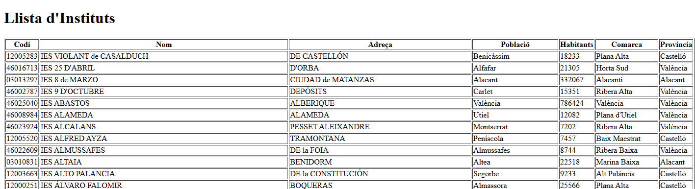

Relaciones entre entidades¶
Hasta ahora cada consulta trabajaba con Comarca. Ahora queremos mostrar un instituto junto con su población y comarca, sin construir manualmente cada objeto relacionado como hacíamos con JDBC.
Comprender las relaciones¶
En geo, una comarca puede tener muchas poblaciones y una población puede tener muchos institutos. Desde el otro lado, cada población puede referenciar una comarca y cada instituto puede referenciar una población. En este esquema las claves foráneas admiten valores nulos.

En Kotlin representaremos esas referencias como propiedades de tipo Poblacio? y Comarca?. La anotación @ManyToOne significa «muchos registros pueden apuntar al mismo registro relacionado». @JoinColumn indica la columna de la clave foránea en la tabla de origen.
No añadiremos listas inversas con @OneToMany: no son necesarias para estas consultas. Tampoco activaremos borrados en cascada ni modificaremos el esquema de PostgreSQL.
¿Cuándo utilizar @OneToMany?
@ManyToOne permite acceder desde una población a su comarca mediante poblacion.comarca. Añadir @OneToMany en la entidad Comarca permitiría recorrer sus poblaciones mediante una colección, como comarca.poblaciones.
Resulta útil cuando necesitamos navegar habitualmente desde un objeto hacia sus elementos relacionados. No es obligatorio añadirlo por tener un @ManyToOne: podemos representar solo el sentido de la relación que necesitamos.
En estos ejemplos obtenemos las poblaciones de una comarca consultando el repositorio con findByComarcaNomC(...), por lo que no necesitamos añadir esa colección a la entidad.
Entidades y archivos¶
Conserva una sola clase Comarca y crea model/Poblacio.kt y model/Institut.kt. Si ya existen, actualízalas; no copies una segunda definición. Los campos con ? permiten representar los valores nulos de la base de datos.
Los ejemplos siguientes muestran primero las relaciones y después su consulta. La parte HTML reutiliza lo aprendido con Thymeleaf; la parte REST utiliza servicios y DTO.
Comarca: conservar la entidad existente¶
package org.example.springjpa.model
import jakarta.persistence.*
@Entity
@Table(name = "comarca")
class Comarca(
@Id
@Column(name = "nom_c")
var nomC: String = "",
@Column(name = "provincia")
var provincia: String? = null
)
Poblacio: referencia a la comarca¶
package org.example.springjpa.model
import jakarta.persistence.*
@Entity
@Table(name = "poblacio")
class Poblacio(
@Id
@Column(name = "cod_m")
var codM: Int = 0,
@Column(name = "nom")
var nom: String = "",
@Column(name = "poblacio") // (3)!
var poblacio: Int? = null,
@Column(name = "extensio")
var extensio: Double? = null,
@Column(name = "altura")
var altura: Int? = null,
@Column(name = "longitud")
var longitud: String? = null,
@Column(name = "latitud")
var latitud: String? = null,
@Column(name = "llengua")
var llengua: String? = null,
@ManyToOne // (1)!
@JoinColumn(name = "nom_c", referencedColumnName = "nom_c") // (2)!
var comarca: Comarca? = null
)
- Muchas poblaciones pueden pertenecer a una misma comarca. La propiedad guarda una referencia a una entidad, no solo su nombre.
- La columna
poblacio.nom_creferenciacomarca.nom_c. Hibernate usa ese mapeo para resolver la relación. - Número de habitantes
Institut: referencia a la población¶
package org.example.springjpa.model
import jakarta.persistence.*
@Entity
@Table(name = "institut")
class Institut(
@Id
@Column(name = "codi")
var codi: String = "",
@Column(name = "adreca")
var adreca: String? = null,
@Column(name = "codpostal")
var codPostal: Int? = null,
@Column(name = "nom")
var nom: String? = null,
@Column(name = "numero")
var numero: String? = null,
@ManyToOne // (1)!
@JoinColumn(name = "cod_m", referencedColumnName = "cod_m") // (2)!
var poblacio: Poblacio? = null // (3)!
)
- Varios institutos pueden referenciar la misma población.
institut.cod_mes la clave foránea. No necesitas mapear además otro campo editablecodMenInstitutpara la misma columna: puedes leer el código medianteinstitut.poblacio?.codM.- objeto de población relacionado
Consultas sobre relaciones¶
Conserva tu ComarcaRepository con findByProvincia y la ordenación de los apartados anteriores. No necesitas sustituirlo.
Crea los otros dos repositorios dentro del paquete repository. Los nombres se forman con propiedades Kotlin, no con las columnas SQL. Por ejemplo, findByPoblacioComarcaProvincia recorre institut.poblacio.comarca.provincia; los puntos sirven aquí para explicar el recorrido, pero no se escriben en el nombre del método.
InstitutRepository.kt¶
package org.example.springjpa.repository
import org.example.springjpa.model.Institut
import org.springframework.data.jpa.repository.JpaRepository
interface InstitutRepository : JpaRepository<Institut, String> {
// Obtener institutos de una población
fun findByPoblacioNom(nom: String): List<Institut>
// Filtrar por codigo, como se pide en el proyecto final
fun findByPoblacioCodM(codM: Int): List<Institut>
// Obtener institutos de una comarca
fun findByPoblacioComarcaNomC(nomC: String): List<Institut>
// Obtener institutos de una provincia
fun findByPoblacioComarcaProvincia(provincia: String): List<Institut> // (1)!
// Obtener institutos cuya población es mayor a
fun findByPoblacioPoblacioGreaterThan(poblacio: Int): List<Institut>
}
- El nombre recorre tres propiedades:
Institut.poblacio,Poblacio.comarcayComarca.provincia. Los registros sin esas relaciones no coinciden con un filtro por provincia.
PoblacioRepository.kt¶
package org.example.springjpa.repository
import org.example.springjpa.model.Poblacio
import org.springframework.data.jpa.repository.JpaRepository
interface PoblacioRepository : JpaRepository<Poblacio, Int> {
// Obtener poblaciones de una comarca
fun findByComarcaNomC(nomC: String): List<Poblacio>
// Obtener poblaciones de una provincia
fun findByComarcaProvincia(provincia: String): List<Poblacio>
}
Mostrar las relaciones en HTML¶
Crea los siguientes controladores en controller y las dos plantillas en resources/templates. No sustituyen el controlador de comarcas, porque utilizan rutas diferentes. Aquí reutilizamos el acceso directo al repositorio del primer ejemplo HTML; más abajo aislaremos las lecturas REST en servicios.
InstitutMvcController.kt¶
package org.example.springjpa.controller
import org.example.springjpa.repository.InstitutRepository
import org.springframework.stereotype.Controller
import org.springframework.ui.Model
import org.springframework.web.bind.annotation.*
@Controller
@RequestMapping("/instituts")
class InstitutController(private val institutRepository: InstitutRepository) {
//Muestra todos los intitutos
@GetMapping
fun listarInstituts(model: Model): String {
val instituts = institutRepository.findAll()
model.addAttribute("instituts", instituts)
return "instituts"
}
// Muestra institutos de una población
@GetMapping("/por-poblacio")
fun obtenerInstitutsPoblacio(@RequestParam poblacio: String, model: Model): String {
val institutsPoblacio = institutRepository.findByPoblacioNom(poblacio)
model.addAttribute("instituts", institutsPoblacio)
return "instituts" // Plantilla para mostrar la lista de institutos
}
// Muestra institutos de una comarca
@GetMapping("/por-comarca")
fun obtenerInstitutsComarca(@RequestParam comarca: String, model: Model): String {
val institutsComarca = institutRepository.findByPoblacioComarcaNomC(comarca)
model.addAttribute("instituts", institutsComarca)
return "instituts" // Plantilla para mostrar la lista de institutos
}
// Muestra institutos de una provincia
@GetMapping("/por-provincia")
fun obtenerInstitutsProvincia(@RequestParam provincia: String, model: Model): String {
val institutsProvincia = institutRepository.findByPoblacioComarcaProvincia(provincia)
model.addAttribute("instituts", institutsProvincia)
return "instituts" // Plantilla para mostrar la lista de institutos
}
// Muestra institutos con población superior a un valor
@GetMapping("/poblacion-superior")
fun obtenerInstitutsPoblacionSuperior(@RequestParam poblacio: Int, model: Model): String {
val institutsConPoblacionSuperiorA = institutRepository.findByPoblacioPoblacioGreaterThan(poblacio)
model.addAttribute("instituts", institutsConPoblacionSuperiorA)
return "instituts" // Plantilla para mostrar la lista de institutos
}
}
PoblacioMvcController.kt¶
package org.example.springjpa.controller
import org.example.springjpa.repository.PoblacioRepository
import org.springframework.stereotype.Controller
import org.springframework.ui.Model
import org.springframework.web.bind.annotation.*
@Controller
@RequestMapping("/poblacions")
class PoblacioController(private val poblacioRepository: PoblacioRepository) {
// Muestra todas las poblaciones
@GetMapping
fun listarTodasPoblacions(model: Model): String {
val poblacions = poblacioRepository.findAll()
model.addAttribute("poblacions", poblacions)
return "poblacions" // Vista Thymeleaf para mostrar todas las poblaciones
}
// Muestra las poblaciones por comarca
@GetMapping("/por-comarca")
fun listarPoblacionsPorComarca(@RequestParam comarca: String, model: Model): String {
val poblacions = poblacioRepository.findByComarcaNomC(comarca)
model.addAttribute("poblacions", poblacions)
return "poblacions" // Vista Thymeleaf para mostrar las poblaciones por comarca
}
@GetMapping("/por-provincia")
fun listarPoblacionsPorProvincia(@RequestParam provincia: String, model: Model): String {
val poblacions = poblacioRepository.findByComarcaProvincia(provincia)
model.addAttribute("poblacions", poblacions)
return "poblacions" // Vista Thymeleaf para mostrar las poblaciones por comarca
}
}
Plantilla instituts.html¶
<!DOCTYPE html>
<html xmlns:th="http://www.thymeleaf.org">
<head>
<title>Instituts</title>
</head>
<body>
<h1>Llista d'Instituts</h1>
<table border="1">
<tr>
<th>Codi</th>
<th>Nom</th>
<th>Adreça</th>
<th>Població</th>
<th>Habitants</th>
<th>Comarca</th>
<th>Provincia</th>
</tr>
<tr th:each="institut : ${instituts}">
<td th:text="${institut.codi}">Codi</td>
<td th:text="${institut.nom}">Nom</td>
<td th:text="${institut.adreca}">Adreça</td>
<td th:text="${institut.poblacio?.nom}">Població</td>
<td th:text="${institut.poblacio?.poblacio}">Habitants</td>
<td th:text="${institut.poblacio?.comarca?.nomC}">Comarca</td>
<td th:text="${institut.poblacio?.comarca?.provincia}">Provincia</td>
</tr>
</table>
</body>
</html>
Plantilla poblacions.html¶
<!DOCTYPE html>
<html xmlns:th="http://www.thymeleaf.org">
<head>
<title>Poblacions</title>
</head>
<body>
<h1>Llista de Poblacions per Comarca</h1>
<table border="1">
<tr>
<th>Codi</th>
<th>Nom</th>
<th>Comarca</th>
<th>Provincia</th>
</tr>
<tr th:each="poblacio : ${poblacions}">
<td th:text="${poblacio.codM}">Codi</td>
<td th:text="${poblacio.nom}">Nom</td>
<td th:text="${poblacio.comarca?.nomC}">Comarca</td>
<td th:text="${poblacio.comarca?.provincia}">Provincia</td>
</tr>
</table>
</body>
</html>
Comprobar las páginas¶
- Todos los institutos: http://localhost:8080/instituts
- Todas las poblaciones: http://localhost:8080/poblacions
- Todas las comarcas: http://localhost:8080/comarcas
- Listar institutos de una población: http://localhost:8080/instituts/por-poblacio?poblacio=Gandia
- Listar institutos de una comarca: http://localhost:8080/instituts/por-comarca?comarca=Safor
- Listar institutos de una provincia: http://localhost:8080/instituts/por-provincia?provincia=Alacant
- Listar comarcas de una provincia: http://localhost:8080/comarcas/buscar?provincia=Alacant
- Listar poblaciones de una comarca http://localhost:8080/poblacions/por-comarca?comarca=Safor
- Listar poblaciones de una provincia: http://localhost:8080/poblacions/por-provincia?provincia=Alacant
- Listar institutos con población superior a un valor: http://localhost:8080/instituts/poblacion-superior?poblacio=20000

Devolver las relaciones como JSON¶
- Las entidades NO cambian
- Los repositorios NO cambian
- Se añaden DTO y servicios para poblaciones e institutos.
- Los nuevos controladores REST devuelven DTO como JSON; los controladores HTML se conservan.
En este ejemplo mostraremos los resultados en JSON y por tanto utilizaremos los controladores REST.
DTO de salida¶
El paquete dto y ComarcaDTO ya existen. Consérvalos. Crea dto/PoblacioDTO.kt y dto/InstitutDTO.kt, cada uno con su declaración package. Los DTO contienen valores sencillos, no entidades relacionadas.
package org.example.springjpa.dto
data class PoblacioDTO(
val codM: Int,
val nom: String,
val poblacio: Int?,
val comarcaNom: String?
)
Archivo dto/InstitutDTO.kt:
package org.example.springjpa.dto
data class InstitutDTO(
val codi: String,
val nom: String?,
val adreca: String?,
val poblacioNom: String?,
val comarcaNom: String?,
val provincia: String?
)
Servicio de poblaciones¶
Crea service/PoblacioService.kt. No es un paquete nuevo: PoblacioService es una clase dentro del paquete service.
package org.example.springjpa.service
import org.example.springjpa.dto.PoblacioDTO
import org.example.springjpa.repository.PoblacioRepository
import org.springframework.stereotype.Service
import org.springframework.transaction.annotation.Transactional
@Service
@Transactional(readOnly = true)
class PoblacioService(
private val poblacioRepository: PoblacioRepository
) {
fun obtenerPoblacionesPorComarca(nomC: String): List<PoblacioDTO> =
poblacioRepository.findByComarcaNomC(nomC).map {
PoblacioDTO(
codM = it.codM,
nom = it.nom,
poblacio = it.poblacio,
comarcaNom = it.comarca?.nomC // (1)!
)
}
}
?.accede al nombre solo si hay una comarca relacionada. Si no existe, conservanull. La conversión se realiza dentro de la transacción de lectura del servicio.
Servicio de institutos¶
Crea service/InstitutService.kt. Conserva ComarcaService.
package org.example.springjpa.service
import org.example.springjpa.dto.InstitutDTO
import org.example.springjpa.repository.InstitutRepository
import org.springframework.stereotype.Service
import org.springframework.transaction.annotation.Transactional
@Service
@Transactional(readOnly = true)
class InstitutService(
private val institutRepository: InstitutRepository
) {
fun obtenerInstitutosPorProvincia(provincia: String): List<InstitutDTO> =
institutRepository.findByPoblacioComarcaProvincia(provincia)
.map {
InstitutDTO(
codi = it.codi,
nom = it.nom,
adreca = it.adreca,
poblacioNom = it.poblacio?.nom,
comarcaNom = it.poblacio?.comarca?.nomC,
provincia = it.poblacio?.comarca?.provincia
)
}
}
Controladores REST¶
Crea controller/InstitutRestController.kt:
package org.example.springjpa.controller
import org.example.springjpa.service.InstitutService
import org.example.springjpa.dto.InstitutDTO
import org.springframework.web.bind.annotation.*
@RestController
@RequestMapping("/api/instituts")
class InstitutRestController(
private val institutService: InstitutService
) {
@GetMapping("/provincia")
fun obtenirPerProvincia(
@RequestParam provincia: String
): List<InstitutDTO> =
institutService.obtenerInstitutosPorProvincia(provincia)
}
Crea controller/PoblacioRestController.kt:
package org.example.springjpa.controller
import org.example.springjpa.dto.PoblacioDTO
import org.example.springjpa.service.PoblacioService
import org.springframework.web.bind.annotation.*
@RestController
@RequestMapping("/api/poblacions")
class PoblacioRestController(
private val poblacioService: PoblacioService
) {
// Obtener poblaciones de una comarca
@GetMapping("/comarca")
fun obtenirPerComarca(
@RequestParam nomC: String
): List<PoblacioDTO> =
poblacioService.obtenerPoblacionesPorComarca(nomC)
}
- Listar las poblaciones de la Comarca del Ports: http://localhost:8080/api/poblacions/comarca?nomC=Ports
Cómo utilizar una relación al crear un registro¶
Para el alta de un instituto, el cliente enviará el código de una población existente, no una población nueva. En el servicio, consulta poblacioRepository.findById(codigo), comprueba que existe y asigna la entidad recuperada a institut.poblacio antes de guardar el instituto.
No crees una población ficticia para evitar la comprobación y no necesitas guardar de nuevo la población. Puedes seguir el manejo de errores de Escritura desde la API para devolver 400 cuando el código de población recibido no exista.
Ejemplo de alta con una población existente¶
Este ejemplo se centra en cómo asignar la relación al crear un instituto. No es el endpoint completo del proyecto: partimos de datos de prueba válidos y un código de instituto que todavía no exista. Las validaciones generales, el DTO de entrada y la respuesta de la API se construyen siguiendo el ejemplo de comarcas.
En service/InstitutService.kt, añade estos imports:
import org.example.springjpa.model.Institut
import org.example.springjpa.repository.PoblacioRepository
Modifica el constructor de la clase existente para recibir los dos repositorios. Conserva sus anotaciones y los métodos de consulta:
class InstitutService(
private val institutRepository: InstitutRepository,
private val poblacioRepository: PoblacioRepository // (1)!
) {
// Conserva aqui los metodos existentes y añade el metodo siguiente.
}
- Spring proporciona ambos repositorios mediante el constructor. Uno permite guardar el instituto y el otro consultar la población que ya existe. No creamos otro servicio con el mismo nombre.
Añade este método dentro de la clase, antes de su llave final. Utiliza ErrorOperacion, definida anteriormente en el mismo paquete service:
@Transactional // (1)!
fun crearInstituto(
codigo: String,
nombre: String,
direccion: String,
codigoPoblacion: Int
) {
val poblacion = poblacioRepository.findById(codigoPoblacion)
.orElseThrow { ErrorOperacion(400, "La poblacion indicada no existe") } // (2)!
val instituto = Institut(
codi = codigo,
nom = nombre,
adreca = direccion,
poblacio = poblacion // (3)!
)
institutRepository.save(instituto) // (4)!
}
- Es una operación de escritura, por lo que sustituye la configuración
readOnly = truede la clase. Debe llamarse desde otro componente al servicio gestionado por Spring. - Recuperamos una entidad
Poblacioexistente. Si no aparece, detenemos el alta: no creamos la población ni guardamos el instituto. - La propiedad
poblaciorecibe un objetoPoblacio, no el número recibido como argumento. Hibernate utiliza su clavecodMpara guardar la columnacod_mdel instituto, según el mapeo de@JoinColumn. - Guardamos el instituto. No llamamos a
poblacioRepository.save(...), porque no estamos creando ni modificando la población.
El recorrido que debes comprender es:
Endpoint para comprobar el alta¶
Para probar crearEjemplo, añade el siguiente método dentro de tu InstitutRestController existente, que ya tiene la ruta base /api/instituts y recibe InstitutService. Conserva sus métodos de consulta.
Añade también este import al controlador:
@PostMapping("/CrearInstituto")
fun crearEjemplo(
@RequestParam codigo: String,
@RequestParam nombre: String,
@RequestParam direccion: String,
@RequestParam codigoPoblacion: Int
): ResponseEntity<Void> {
institutService.crearInstituto(codigo, nombre, direccion, codigoPoblacion)
return ResponseEntity.status(201).build()
}
Este endpoint de prueba recibe parámetros de petición, sin cuerpo JSON. Llama al servicio, que recupera la población y guarda el instituto asociado. Si termina correctamente, devuelve 201 Created, sin cuerpo de respuesta, porque crearEjemplo no devuelve un DTO.
Probarlo con Postman¶
Primero consulta en DBeaver un código de población existente:
En Postman, selecciona POST, introduce http://localhost:8080/api/instituts/CrearInstituto y añade estos valores en la pestaña Params:
| Parámetro | Valor de prueba |
|---|---|
codigo |
TEST01 (comprueba antes que no exista) |
nombre |
Institut de prova |
direccion |
Carrer Major, 1 |
codigoPoblacion |
Un cod_m real obtenido en la consulta anterior |
Pulsa Send. Debes recibir 201 Created. Comprueba en DBeaver que se ha guardado el instituto con el código de población elegido:
SELECT i.codi, i.nom, i.adreca, i.cod_m, p.nom AS poblacion
FROM institut i
JOIN poblacio p ON p.cod_m = i.cod_m
WHERE i.codi = 'TEST01';
Para comprobar el error de la relación, repite la petición con otro código de instituto y un codigoPoblacion que hayas comprobado que no existe. Con ErroresApi del apartado anterior, recibirás 400 Bad Request y el mensaje La poblacion indicada no existe; no se guardará ese instituto.